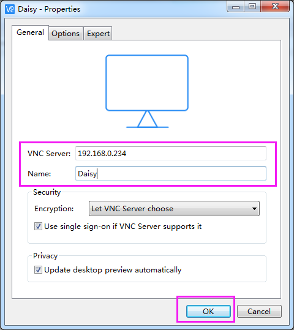
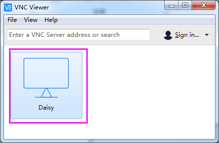
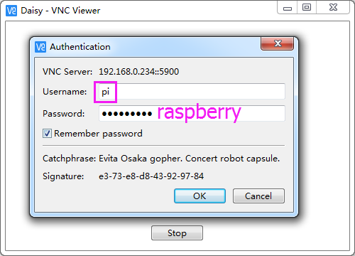
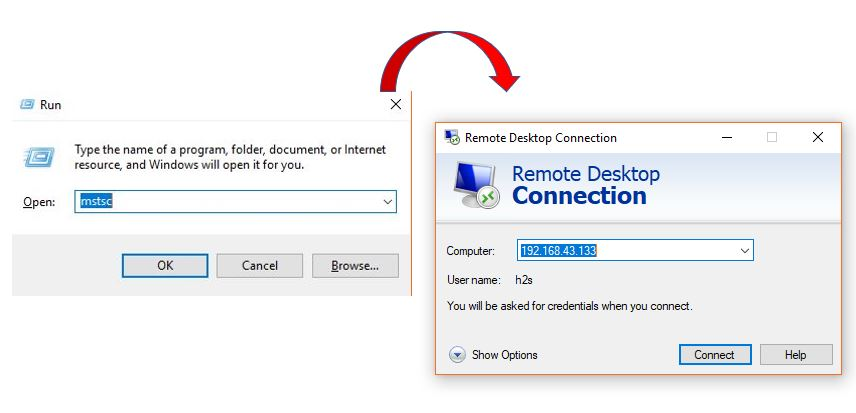
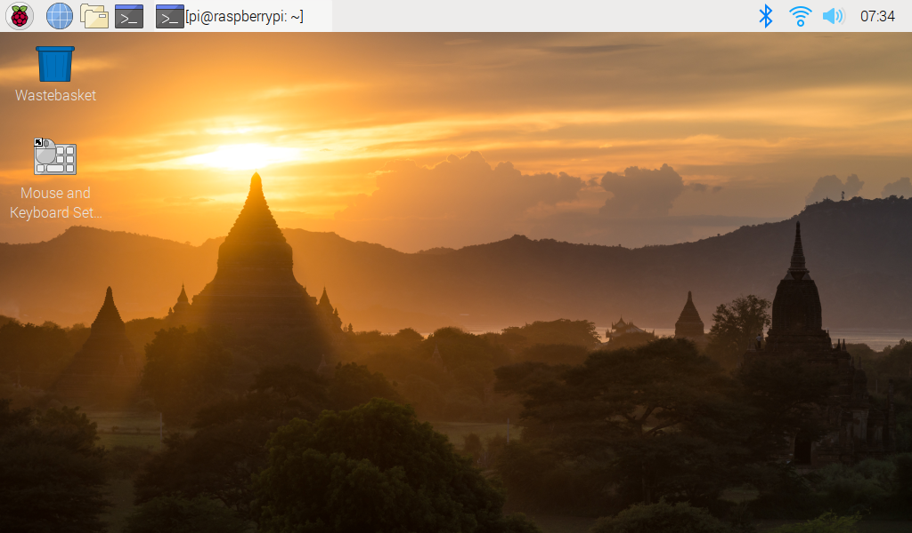

Nota
Ciao, benvenuto nella community SunFounder Raspberry Pi & Arduino & ESP32 su Facebook! Approfondisci Raspberry Pi, Arduino ed ESP32 insieme ad altri appassionati.
Perché unirti a noi?
Supporto esperto: Risolvi i problemi post-vendita e le sfide tecniche con l’aiuto della nostra comunità e del nostro team.
Impara e condividi: Scambia suggerimenti e tutorial per migliorare le tue competenze.
Anteprime esclusive: Accedi in anteprima agli annunci dei nuovi prodotti e alle anticipazioni.
Sconti speciali: Goditi sconti esclusivi sui nostri prodotti più recenti.
Promozioni festive e omaggi: Partecipa agli omaggi e alle promozioni festive.
👉 Pronto a esplorare e creare con noi? Clicca [Qui] e unisciti oggi!
Desktop Remoto
Ci sono due modi per controllare il desktop del Raspberry Pi da remoto:
VNC e XRDP, puoi utilizzare entrambi.
VNC
Puoi utilizzare la funzione di desktop remoto tramite VNC.
Abilitare il servizio VNC
Il servizio VNC è già installato nel sistema. Per impostazione predefinita, VNC è disabilitato. È necessario abilitarlo nella configurazione.
Passo 1
Inserisci il seguente comando:
sudo raspi-config

Passo 2
Scegli 3 Interfacing Options premendo la freccia verso il basso sulla tua tastiera, poi premi il tasto Enter.

Passo 3
P3 VNC

Passo 4
Seleziona Yes -> OK -> Finish per uscire dalla configurazione.

Accedere a VNC
Passo 1
Devi scaricare e installare VNC Viewer sul tuo computer. Dopo aver completato l’installazione, aprilo.
Passo 2
Seleziona "New connection".

Passo 3
Inserisci l’indirizzo IP del Raspberry Pi e un Nome a tua scelta.
Passo 4
Fai doppio clic sulla connessione appena creata:
Passo 5
Inserisci il Nome utente (pi) e la Password (raspberry per impostazione predefinita).
Passo 6
Ora puoi vedere il desktop del Raspberry Pi:

Questa è la fine della parte VNC.
XRDP
Un altro metodo di desktop remoto è XRDP, che fornisce un accesso grafico alle macchine remote utilizzando RDP (Microsoft Remote Desktop Protocol).
Installare XRDP
Passo 1
Accedi al Raspberry Pi tramite SSH.
Passo 2
Inserisci i seguenti comandi per installare XRDP.
sudo apt-get update
sudo apt-get install xrdp
Passo 3
L’installazione inizierà.
Digita "Y" e premi il tasto "Enter" per confermare.

Passo 4
Terminata l’installazione, dovrai accedere al tuo Raspberry Pi utilizzando le applicazioni di desktop remoto di Windows.
Accedere a XRDP
Passo 1
Se sei un utente Windows, puoi utilizzare la funzione di Desktop Remoto inclusa in Windows. Se sei un utente Mac, puoi scaricare e utilizzare Microsoft Remote Desktop dall’APP Store. Non ci sono grandi differenze tra le due versioni. L’esempio seguente è per il desktop remoto su Windows.
Passo 2
Digita "mstsc" in Esegui (WIN+R) per aprire la Connessione Desktop Remoto e inserisci l’indirizzo IP del Raspberry Pi, quindi clicca su "Connect".
Passo 3
Apparirà la pagina di login di xrdp. Inserisci il tuo nome utente e password. Successivamente, clicca su "OK". Al primo accesso, il tuo nome utente sarà "pi" e la password sarà "raspberry".

Passo 4
Ora sei connesso con successo al Raspberry Pi utilizzando il desktop remoto.
Nota sul Copyright
Tutti i contenuti, inclusi ma non limitati a testi, immagini e codice in questo manuale, sono di proprietà della SunFounder Company. Dovresti utilizzarli solo per scopi personali di studio, indagine, divertimento o altri scopi non commerciali o senza fini di lucro, in conformità con le normative e le leggi sul copyright, senza violare i diritti legali dell’autore e dei relativi titolari di diritti. Per qualsiasi individuo o organizzazione che utilizzi questi contenuti per profitto commerciale senza permesso, la società si riserva il diritto di intraprendere azioni legali.